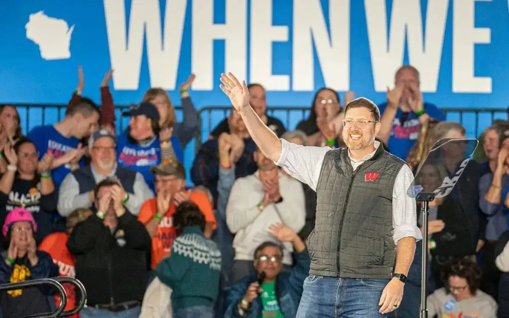
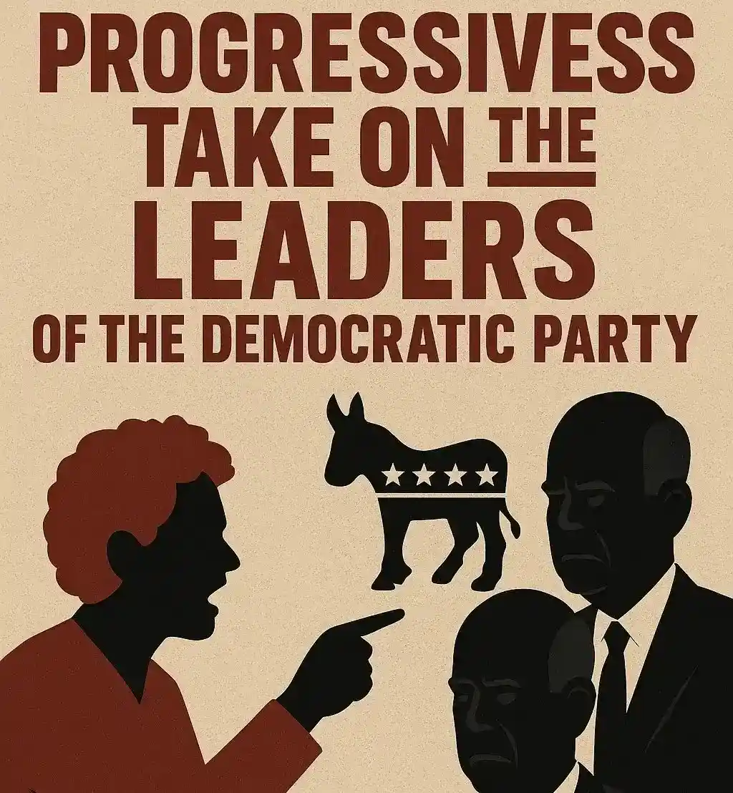

# Business
Private Payrolls in the U.S. Went Up in October
Private payrolls in the U.S. rose sharply, which showed that the job market was getting better again, even though some big companies were still laying off workers.


It's clear that the Democrats are having a really hard time right now.Progressive leaders want to know what the party's leaders are doing and how much power they have.As the next election cycle gets closer, the political climate is changing because of disagreements over long-term strategy, messaging, and policy goals.The heads of the Democratic Party and the progressives don't just disagree on what is right and wrong.


Progressives are getting more and more power in the United States.They have won important primaries, changed the way people talk about the country's economic transformation, and made policies that used to be seen as extreme more common.Progressive politicians want to fight climate change, make healthcare more affordable, help students pay off their debts, and bring the rich and poor closer together. One reason for this is that they aren't being more moderate, which is what most Democratic leaders would like them to do.Most of the people in the party are young and want to help the progressive movement grow from the ground up.
The Democratic elite, on the other hand, still thinks it's important to be honest, win elections, and make deals in close races. Many older Democrats are worried that the hardline agenda could turn off moderate voters and make it harder for them to win important elections.This divide has come up again in recent talks about how the government spends money, what it does about foreign policy, and how the party interacts with the people in general.
Progressives want the party to do more, but establishment Democrats only want to make small changes to policy and work with Republicans to make them happen.A lot of people don't agree with this.
One of the most clear things that the two sides don't agree on is how to handle the economy. Progressive politicians want businesses to follow stricter rules, social safety nets to be bigger, and more action to be taken on climate change.
The Democratic leaders also back economic programs that are meant to win over people who live in the suburbs and the city center.Foreign policy in the U.S. is another big issue.Progressives have pushed for more respect for human rights and responsibility, but the party's leaders haven't always agreed with them.
People all over the U.S. are keeping a close eye on the Democratic Party as progressives take charge.The progressive agenda is popular with young voters, voters of color, and people who are voting for the first time. The party thinks it needs to change what it's doing because of this.
On the other hand, many moderate and older voters like how stable establishment Democrats are.The Democratic Party is getting ready for big elections in the US and the state.This disagreement in the party could affect how people vote, how the campaign is run, and what the party stands for as a whole. What the party does now will determine how well it can unite its base and what will happen next.
This is a turning point because the leaders of the Democratic Party and progressives are fighting more and more.The party has to choose between a policy that is more extreme and one that is more moderate and tries to get more people to vote for them.
Finding a middle ground between what an active progressive movement needs and what is possible in national politics is hard.The end of this internal conflict will have a big impact on the Democratic Party's identity and how politics works in the country for a long time.
Private payrolls in the U.S. rose sharply, which showed that the job market was getting better again, even though some big companies were still laying off workers.

The best Wall Street experts say that the chances of a stock market disaster are growing as prices go up and the economy becomes less stable.

The fast food chain's sales were better than Wall Street had thought because their cheap value meals drew in customers who were hesitant to spend a lot of money on food.
Leave a Reply